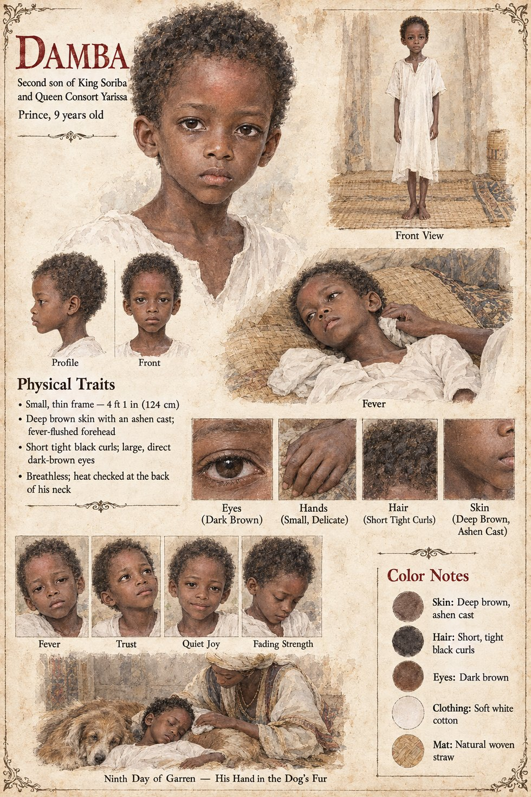

Damba
Second son of King Soriba and Queen consort Yarissa · the boy the Cell was for · 9 years old
Nine years old, small for it, sick since before his youngest memory with a wasting, feverish complaint that recedes for months at a time and returns worse, which leaves him breathless on the palace's outer stair and, by his ninth winter, unable to sit through a full council session without his mother's hand finding the back of his neck to check it for heat. He is not expected to inherit anything; the throne will pass to his brother Tiemoko, four years older, who treats his illness with the mild, distracted kindness of someone who did not yet understand that kindness might be all that was left to offer. Sana is the ninth physician to try. Damba, unlike every adult in that palace, asked Sana direct questions and expected direct answers, and somewhere across a dozen visits stops treating the healer as a professional curiosity and starts treating him as a friend, the unhurried, unimpressed kind a sick child rarely gets, since everyone else who entered his room arrived already grieving him.
On Sana's sixth visit the dog comes with him for the first time, and Damba is delighted by it in the undignified way of a child who has been solemn about his own fragility for far longer than any child should have to be. He learns that its name, Doni, means nothing at all, and asks whether nothing could still be a good name; Sana tells him, truthfully for once, that it is probably the best kind. After that the dog comes every time, and sleeps across the foot of his sleeping-mat. In the month of Ferren Sana decides to use the Immortal Cell for him, and loses it to the dog instead. The fever turns in the second week of Garren, faster than anything the illness has done before; Damba dies on the ninth day, a little before the dawn recitation-bell, with his hand loosely curled in the fur at the dog's neck.
What survives him is a line and a sentence. The household Recounter adds his name to the spoken account within the hour; seventeen days after he is carried to the burial ground his mother dictates a ration for the dog to continue; the lower town comes to believe the dog is the boy himself, come back to stay; and forty-seven years later his brother, dying, sends a message to him through the Chief Recounter, I kept the dog fed, which the Account still holds in the line of Damba, son of Soriba, who died in his ninth year. The manuscript does not say whether he ever knew what Sana had planned.
The manuscript gives his age, smallness, fever, the heat at the back of his neck, the dog on his mat and the hand in its fur. The sheet's 4 ft 1 in (124 cm), thin frame, deep brown skin with an ashen cast, fever-flushed forehead, short tight black curls, large direct dark-brown eyes, soft white cotton and straw mat are its own, as are its panels Fever, Trust, Quiet Joy and Fading Strength, and its scene Ninth Day of Garren — His Hand in the Dog's Fur.
“asked Sana direct questions and expected direct answers”